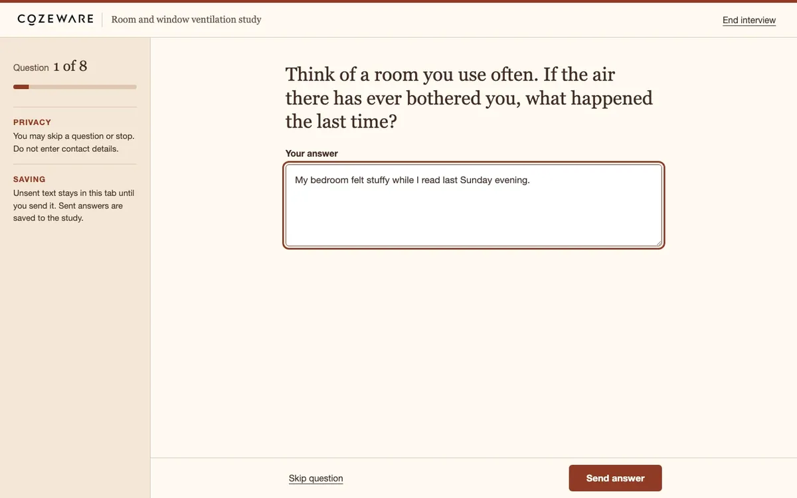
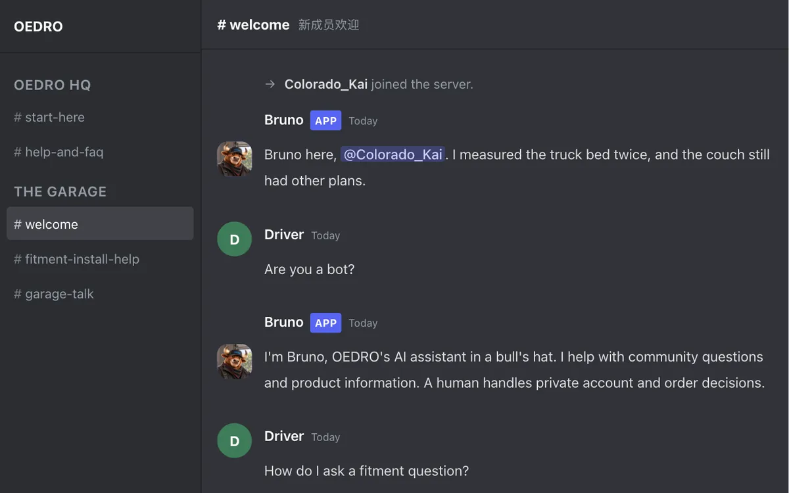
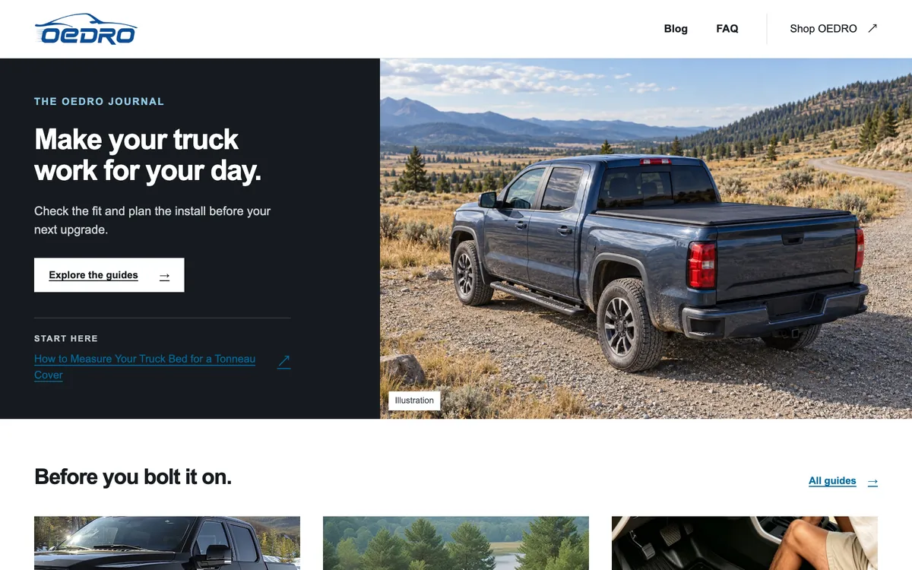
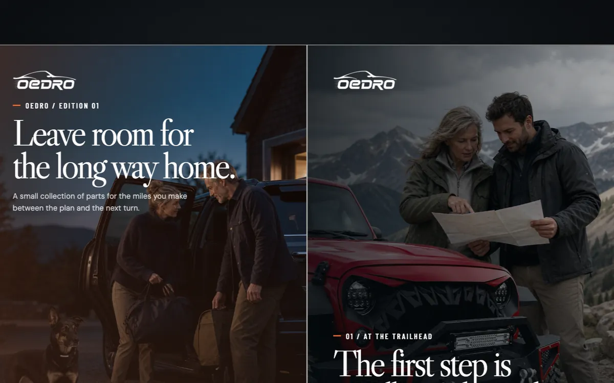
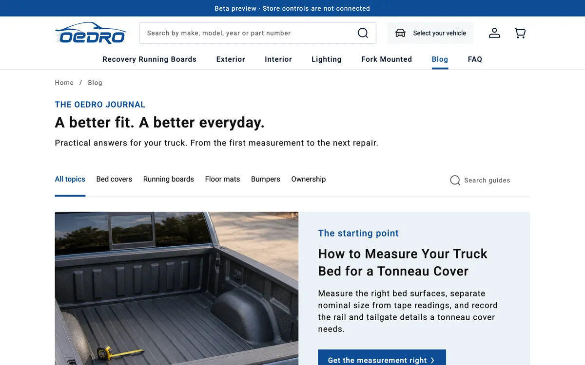
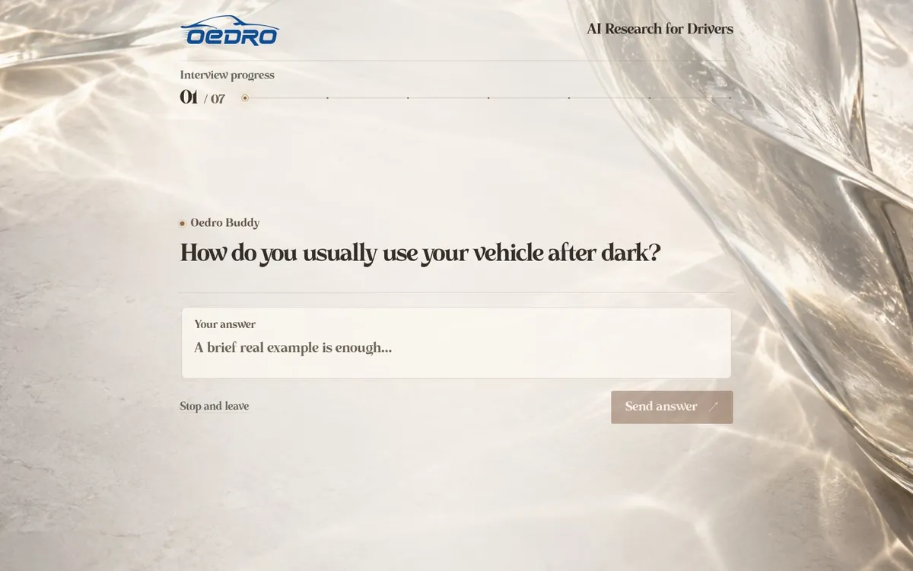
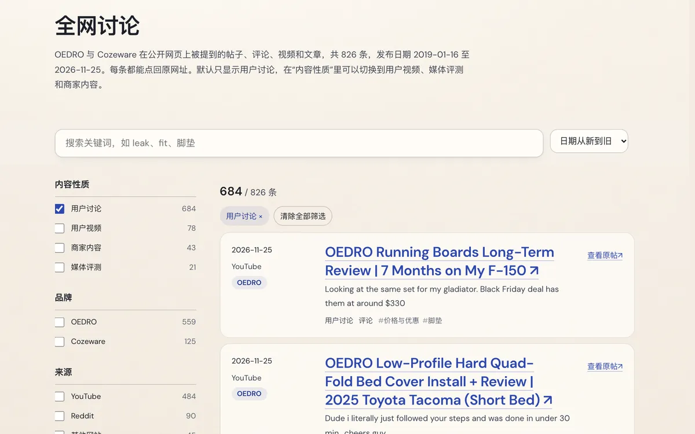
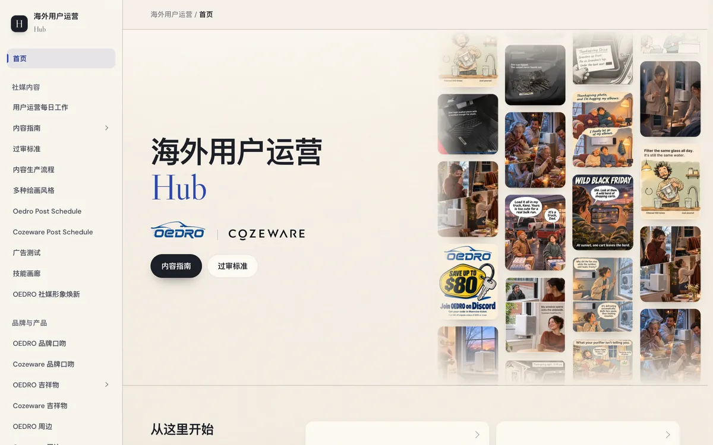

Cozeware FreshFlow AI 访谈
AI Interview八题在线访谈，AI 按回答追问，可在页内走完整个流程。
用 AI 编程助手搭建的网页与工具，每一件都能在页内直接操作。

八题在线访谈，AI 按回答追问，可在页内走完整个流程。

以 Bruno 的身份欢迎新成员、回答常见问题，订单问题转给人工；每天发一张 Bruno 漫画。

指南、问答、Blog 和内容后台，整站可操作。

品牌故事与车主问卷两本可翻动的书。

与官网同款页头页脚、正文重新设计的 Blog、12 篇指南和 34 条问答，开发完成，待部署上线。

对话式访谈，页内直接试填。

两个品牌在公开网页上被提到的帖子、评论和视频，可筛选、可全文搜索。

推送前检查回放，以及导航与数据的组织方式。